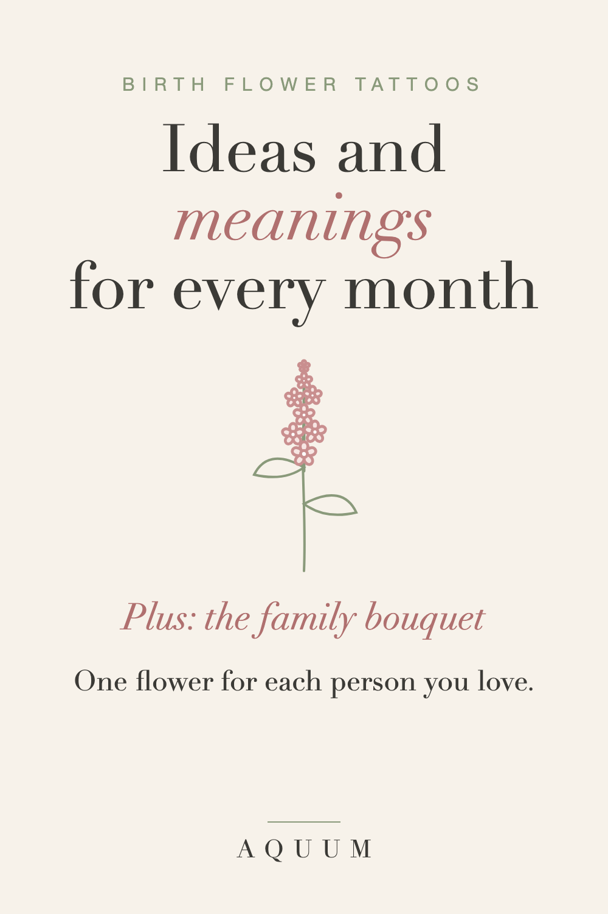

Birth Flower Tattoo Ideas: Meanings by Month and How to Combine Them
2026-09-30
This article may contain affiliate links. How that works.

A birth flower tattoo is one of the most personal designs you can choose. It's small enough to fit anywhere, it looks good in fine line or full color, and it carries a meaning that's yours by birth, or by the birth of someone you love.
Before you book, it helps to know what each flower means and how the flowers look together.
What each month's flower says
- January · Carnation: love that doesn't give up. Ruffled petals that read well in fine line.
- February · Violet: quiet loyalty. Tiny and delicate, perfect for a wrist or behind the ear.
- March · Daffodil: new beginnings. A popular choice for a fresh start.
- April · Daisy: uncomplicated joy. Simple and instantly recognizable, even very small.
- May · Lily of the Valley: happiness returns. The hanging bells make a graceful vertical design.
- June · Rose: love in all its forms. A classic that works at any size.
- July · Larkspur: an open heart. Tall and slender, great along the forearm or spine.
- August · Gladiolus: strength of character. A long stem of blooms for a bold, vertical piece.
- September · Aster: wisdom and patience. Star-shaped and airy.
- October · Marigold: warmth that stays, and a flower of remembrance. A meaningful memorial choice.
- November · Chrysanthemum: honest friendship. Full and round, lovely as a centerpiece.
- December · Paperwhite: good wishes for what's ahead. Clean white petals, elegant in fine line.
The month-by-month guide has the history and second flower for each month, and our printable chart puts all twelve on one page, handy to bring to a consultation.
Ideas for combining birth flowers
- A family bouquet. One flower for each person, tied with a single stem or ribbon. The most requested birth flower design, and it can grow when the family does.
- Mother and children. Her flower in the center, the children's flowers around it.
- Matching tattoos. Best friends or sisters get each other's flower, or the same bouquet with both flowers.
- A memorial piece. The birth flower of someone you lost, often paired with the marigold for remembrance.
- Flower and date. A single bloom with a birth date or a name in small script.
What to bring to your artist
- The flowers and months you want, written down, plus reference photos of the real flowers.
- Your size and placement, and whether you want fine line, black and grey or color.
- How many flowers will be in the design, and whether you want room to add more later.
Your artist will draw the final design. A good reference makes the consultation faster and the result more personal.
Not ready for ink?
A birth flower on something you use every day, like a shirt, a mug or a tote, carries the same meaning without the commitment. It also makes a thoughtful gift for someone whose flower you know. Browse our gift guides for ideas.